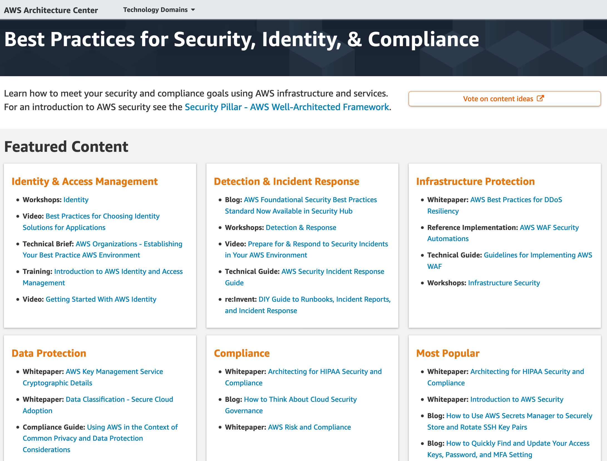

AWS 보안 관련 교육, 블로그, 백서
AWS 보안 및 규정 준수와 관련된 교육과정, 보안 블로그, 보안 백서 등의 정보는 다음과 같습니다.
AWS Security 교육과정 안내
AWS Security에 대한 온/오프라인 교육과정들입니다.
- AWS Security Learning Path - 온/오프라인 교육과정 안내
- Getting Started with AWS Security, Identity, and Compliance (Korean) (3 hours) - Online, 무료
- AWS Shared Responsibility Model (Korean) (5 minutes) - Online, 무료
- AWS Cloud Practitioner Essentials (Second Edition): AWS Security (Korean) (50 minutes) - Online, 무료
- Introduction to AWS Identity and Access Management (10 minutes) – Online, 무료
- Authentication and Authorization with AWS Identity and Access Management (Korean) (15 minutes) - Online, 무료
- Introduction to AWS Security Token Services (STS) (20 minutes) - Online, 무료
- Introduction to Amazon Cloud Directory (10 minutes) – Online, 무료
- Introduction to Amazon Macie (10 minutes) – Online, 무료
- Introduction to Data Encryption (5 minutes) - Online, 무료
- Introduction to AWS Artifact (10 minutes) – Online, 무료
- Introduction to Amazon Inspector (15 minutes) – Online, 무료
- Introduction to AWS Organizations (10 minutes) – Online, 무료
- Introduction to Amazon Certificate Manager Private Certificate Authority (15 minutes) – Online, 무료
- Protecting Your Instance with Security Groups (Korean) (10 minutes) - Online, 무료
- Differences Between Security Groups and NACLs (Korean) (10 minutes) - Online, 무료
- Understanding Amazon EBS Volume Encryption (Korean) (2 minutes) - Online, 무료
- Deep Dive on Container Security (Korean) (30 minutes) - Online, 무료
- Using a Token-based Approach to Build Highly Secure, Stateless, and Decoupled Applications (30 minutes) - Online, 무료
- Introduction to AWS CloudTrail (Korean) (10 minutes) - Online, 무료
- Introduction to Amazon CloudWatch (10 minutes) - Online, 무료
- Introduction to Amazon CloudWatch Logs (10 minutes) - Online, 무료
- Introduction to Amazon CloudWatch Logs Insights (10 minutes) - Online, 무료
- Introduction to AWS Service Catalog (10 minutes) - Online, 무료
- Introduction to AWS Trusted Advisor (10 minutes) - Online, 무료
- Introduction to AWS Config (Korean) (10 minutes) - Online, 무료
- Introduction to AWS CloudFormation (Korean) (10 minutes) - Online, 무료
- Introduction to Amazon Virtual Private Cloud (VPC) (10 minutes) - Online, 무료
- Protect Your Web-facing Workloads with AWS Security Services (40 minutes) - Online, 무료
- AWS Security Fundamentals (Korean) (4 hours) – Online, 무료
- Security Operations on AWS (3 days) – Offline, Instructor-led, 유료
- AWS Fundamentals: Addressing Security Risk(4주간 진행, 전체 18시간 소요 - OnLine, 무료
- Exam Readiness: AWS Certified Security - Specialty (2 Hrs) - OnLine, 무료
- Configure and Deploy AWS Client VPN (30 minutes) - OnLine, 무료
- Configure and Deploy Amazon PrivateLink (60 minutes) - Online, 무료
- Machine Learning Security (Korean, 150 minutes) - Online, 무료
- AWS Identity and Access Management - Architecture and Terminology (15 minutes) - Online, 무료
- AWS Identity and Access Management - Basics (15 minutes) - Online, 무료
- AWS Foundations: Securing Your AWS Cloud (Korean) (50 minutes) - Online, 무료
- AWS IoT Security Series (10 hours) - Online, 무료
- Deep Dive into AWS IoT Authentication and Authorization (4 hours) - Online, 무료
- AWS IoT Device Defender Primer (3 hours) - Online, 무료
- Cloud Audit Academy (3 hours) - Online, 무료
- CQ: The AWS Certification Quiz Show | Sydney Summit E04 (15 minutes) - Online, 무료
- CQ: The AWS Certification Quiz Show | Sydney Summit E05 (15 minutes) - Online, 무료
- CQ: The AWS Certification Quiz Show | Episode 06 (30 minutes) - Online, 무료
- AWS Lambda Function Security & Defense in Depth (20 minutes) - Online, 무료
- Deep Dive with Security: AWS Identity and Access Management (IAM)(8 hours) - OnLine, 유료
- Improve Code Quality with Amazon CodeGuru Reviewer(1 Hour) - Online, 무료
- Amazon Simple Storage Service (Amazon S3) Business Continuity and Disaster Recovery(50 minutes) - Online, 무료
- Security Governance at Scale – Technical(4 hours) - OnLine, 무료
- Cybersecurity Awareness program - Online, 무료
- Cloud Audit Academy(3 Hrs) - Online, 무료
AWS 보안 모범사례
- Best Practices for Security, Identity, & Compliance AWS Well-Architected Framework - Security Pillar에 의거하여 고객분들이 참조할 수 있는 보안 모범사례와 관련된 다양한 컨텐츠, 동영상, 레퍼런스 아키텍쳐, 솔루션, 디자인 패턴, 블로그들을 소개하고 있는 사이트입니다.

AWS 보안 블로그
- AWS 보안 블로그 - AWS보안 서비스들의 최신 기능에 대한 소개, 신규 보안 백서, 보안 파트너 제품들과의 연동 등 다양한 주제로 고객들이 AWS를 보다 안전하게 이용할 수 있는 정보들을 제공하고 있습니다.
AWS 보안 및 규정준수 백서
클라우드 보안 및 규정 준수 관련 AWS가 제공하는 백서 및 외부 백서 목록입니다.
보안 백서
- 영문 - Introduction to AWS Security -2021년 11월 11일
- 영문 – AWS Well Architected Framework Security Pillar -2020년 7월
- 한글 – 대규모 보안: AWS에서 로깅하기 - 2015년 10월
- 한글 – 대규모 보안: AWS기반 거버넌스 - 2015년 10월
- 영문 - AWS Governance at Scale - 2018년 11월
- 한글 – AWS 보안 모범 사례 - 2016년 8월
- 한글 – AWS Security by Design 소개 - 2015년 10월
- 영문 – Amazon Web Services: Overview of SecurityProcesses - 2020년 3월
- 영문 - Overview of AWS Security - Analytics, Mobile, and Application Services - 2016년 6월
- 영문 - Overview of AWS Security - Application Services - 2016년 6월 Archived
- 영문 - Overview of AWS Security - Compute Services - 2016년 6월 Archived
- 영문 - Overview of AWS Security - Database Services - 2016년 6월 Archived
- 영문 - Overview of AWS Security - Network Services - 2016년 8월 Archived
- 영문 - Overview of AWS Security - Storage Services - 2016년 6월 Archived
- 영문 - AWS Governance at Scale - 2018년 11월
- 영문 – CIS AWS Foundation - v.1.2, 2018년 5월
- 영문 – CIS Amazon Web Services Three-tier Web - v.1.0, 2016년 11월
- 영문 - Logical Separation on AWS - 2020년 7월
- 한글 – 디도스 대응을 위한 AWS 모범사례 - 2016년 6월
- 영문 - AWS Best Practices for DDoS Resiliency - 2021년 9월 21일, 상기 한글버전의 최신 영문판
- 한글 – AWS WAF를 활용한 OWASP Top10 웹 애플리케이션 취약점 보완 방법 - 2017년 7월
- 영문 - Building a Secure, Approved AMI Factory Process Using Amazon EC2 Systems Manager (SSM), AWS Marketplace, and AWS Service Catalog - 2017년 11월
- 영문 - Single Sign-On: Integrating AWS, OpenLDAP, and Shibboleth - 2015년 4월
- 한글 - 저장 데이터 암호화 - 2014년 11월
- 영문 - AWS Key Management Service Best Practices - 2017년 4월
- 영문 - Security of AWS CloudHSM backups - 2020년 4월
- 영문 - Secure Content Delivery with CloudFront - 2016년 11월 Archived
- 영문 - Security Overview of AWS Lambda - 2019년 3월 Archived
- 영문 - The 12 Most Critical Risks for Serverless Applications 2019 Guide - PureSec과 CSA가 공동으로 제작한 서버리스 환경의 보안 리스크 관련 백서
- 영문 - Securing Internet of Things(IoT) with AWS - 2019년 4월
- 영문 - AWS Security Incidence Response Guide - 2020년 6월
- 영문 - Securely Access Services Over AWS PrivateLink _- 2021년 6월_3일
- 영문 - Securing the Microsoft Platform on Amazon Web Services - 2019년 8월
- 영문 - Active Directory Domain Services on AWS - 2020년 11월
- 영문 - Encrypting File Data with Amazon Elastic File System - 2021년 2월 22일
- 영문 - Amazon Virtual Private Cloud Connectivity Options - 2018년 1월
- 영문 - Building a Scalable and Secure Multi-VPC AWS Network Infrastructure - 2020년 6월
- 영문 - NSA - Mitigating Cloud Vulnerabilities - 2020년 1월
- 영문 - Guidelines for Implementing AWS WAF - 2020년 5월
- 외부논문 - Backstabber’s Knife Collection: A Review of Open Source Software Supply Chain Attacks - 2020년 5월, 174개의 악성 SW 패키지들에 대한 조사
- 외부논문 - CDN Backfired: Amplification Attacks Based on HTTP Range Requests
- 외부백서 - AWS Security Maturity Roadmap - 2020년 5월
- 영문 - Security of AWS CloudHSMBackups - 2021년 3월 24일
- 영문 - Migrating to AWS CloudHSM - 2019년 2월
- 영문 - AWS Shield Threat Landscape Report –Q1.2020 - 2020년 5월
- 영문 - Open Banking on AWS - 2019년
- 영문 - Reference Architecture - Secure Cloud Computing Architecture (SCCA) on AWS GovCloud - 2020년 6월
- 영문 - AWS Security Checklist - 2020년 7월
- 영문 - OREGENIX - Amazon GuardDuty Security Review - 2020년 7월
- 영문 - Securing your AWS Cloud environment from ransomware - 2020년 4월
- 영문 - Lab instrument log acquisition and analytics - 2020년 11월
- 영문 - Security Overview of Amazon API Gateway - 2020년 11월
- 외부 백서 영문 - Kubernetes Security White Papaer - 2019년 6월 17일
- 영문 - Access Amazon WorkSpaces with Common Access Cards - 2021년 3월 8일
- 영문 - Classic Intrusion Analysis Frameworks for AWS Environments: Application and Enhancement - 2021년 3월 31일
- 영문 - Carrier-Grade Mobile Packet Core Network on AWS - 2021년 3월 11일
- 영문 - AWS Security Reference Architecture (AWS SRA) - AWS Prescriptive Guidance - 2021년 6월
- 영문 - Organizing Your AWS Environment Using Multiple Accounts - 2022년 7월 26일
- 영문 - Building an AWS Perimeter - 2021년 9월 8일
- 영문 - Ransomware Risk Management on AWS Using the NIST Cyber Security Framework (CSF) - 2021년 8월 30일
- 영문 - Introducing the Security at the Edge: Core Principles whitepaper
- 영문 - An Overview of the AWS Cloud Adoption Framework - 2021년 11월 22일
- 영문 - Security Best Practices for Manufacturing OT - 2021년 5월 20일
- 영문(외부) - Ransomware resilience on Amazon Web Services: Balancing security and recovery strategies - 2022년 7월
규정 및 컴플라이언스
- 한글 – AWS 사용 감사에 대한 소개 - 2015년 10월
- 영문 - AWS 규정 준수 빠른 참조 안내서 - 2021년
- 영문 - AWS 규정 준수 빠른 참조 안내서: 교육 버전 - 2018년 3월
- 영문 - AWS 위험 및 규정 준수 개요 - 2017년 1월 Archived
- 영문 - Amazon Web Services: Risk and Compliance - 2021년 3월 11일
- 한글 - AWS 위험 및 규정 준수 - 2015년 8월,(상기 영문버전의 이전 버전 번역본) Archived
- 영문 - Automating Governance on AWS - 2015년 8월
- 영문 - AWS Answers to Key Compliance Questions -2017년 1월 Archived
- 영문 - AWS Certifications, Programs, Reports, and Third-Party Attestations - 2017년 3월 Archived
- 영문 - Data Residency - AWS Policy Perspectives - 2020년 8월
- 영문 - Executive Summary Data Residency - AWS Policy Perspectives - 2018년 2월, 상기 백서의 요약본
- 한글 - 개인정보 취급 및 데이터 보호의 공통 고려사항 맥락에서의 AWS 사용 - 2018년 5월, AWS를 사용하여 개인정보가 포함된 콘텐츠를 저장하거나 처리하려고 할때 개인정보 취급 및 데이터 보호에 관한 공통적인 고려사항을 제공
- 영문 - Using AWS in the Context of Australian Privacy Considerations - 2020년 7월
- 영문 - Using AWS in the Context of Hong Kong Privacy Considerations - 2018년 5월
- 영문 - Using AWS in the Context of Malaysian Privacy Considerations - 2018년 5월
- 영문 - Using AWS in the Context of Japan Privacy Considerations - 2018년 5월
- 영문 - Using AWS in the Context of New Zealand Privacy Considerations - 2021년 4월
- 영문 - Using AWS in the Context of Singapore Privacy Considerations - 2018년 5월
- 영문 - Using AWS in the Context of Philippines Privacy Considerations - 2018년 5월
- 영문 - Using AWS in the Context of South African Privacy Considerations - 2019년 7월
- 영문 - Introduction to Auditing the Use of AWS - 2015년 10월 Archived
- 영문 - Regulation Systems Compliance and Integrity Considerations for the AWS Cloud - 2017년 11월
- 영문 - Data Classification - Secure Cloud Adoption - 2018년 6월
- 영문 - CSA Consensus Assessments Initiative Questionnaire - 2017년 5월
- 영문 - NIST Cybersecurity Framework (CSF) - 2019년 1월
- 영문 - AWS Response to CACP Information and Communication Technology Sub-Committee - 2017년 5월
- 영문 - Guidance for Trusted Internet Connection (TIC) Readiness on AWS - 2016년 2월
- 영문 - Secure Network Connections : An evaluation of the US Trusted Internet Connection (TIC) Program - 2017년 8월
- 영문 - MPAA Content Security : Model - 2015년 3월
- 영문 - MPAA Content Security : Best Practices - 2015년 4월
- 영문 - Architecting for HIPAA Security and Compliance on Amazon Web Services - 2021년 12월 6일
- 영문 - Architecting for Genomic Data Security and Compliance in AWS - 2014년 12월
- 영문 - Considerations for Using AWS Products in GxP Systems - 2016년 1월
- 한글 - GxP 시스템에 따른 AWS 제품 사용지침 - 2016년 1월, 상기 백서의 한글 번역본
- 영문 - GxP Systems on AWS - 2021년 3월
- 영문 - GxP Compliance Automation - 2019년 11월, Reference Architecture
- 영문 - Amazon Web Services’ Approach to Operational Resilience in the Financial Sector & Beyond - 2021년 4월, 금융권의 신속한 서비스 복원 요건에 대해 AWS 환경에서의 가이드를 제공하는 백서
- 영문 - Federal Financial Institutions Examination Council (FFIEC) Audit Guide - 2015년 10월
- 한글 - Amazon Web Services에 대한 FFIEC 규정 준수 - 2015년 3월, 상기 백서의 한글 번역본
- 영문 - U.S. Securities and Exchange Commission’s (SEC) Office of Compliance Inspections and Examinations (OCIE) Cybersecurity Initiative Audit Guide - 2015년 10월
- 영문 - AWS User Guide to Financial Services Regulations & Guidelines in Hong Kong - Insurance Authority - 2017년 10월
- 영문 - AWS User Guide to the Hong Kong Insurance Authority on Outsourcing and Use of Internet for Insurance Activities Guidelines - 2020년 4월
- 영문 - AWS User Guide to the Hong Kong Monetary Authority on Outsourcing and General Principles for Technology Risk Management Supervisory Policy Manuals - 2020년 4월
- 영문 - AWS User Guide to Financial Services Regulations & Guidelines in Hong Kong - Monetary Authority - 2020년 4월
- 영문 - AWS User Guide to Financial Services Regulations & Guidelines in Singapore - 2019년 5월
- 영문 - AWS User Guide for U.S. Financial Institutions - 2018년 10월
- 영문 - AWS User Guide to Financial Services Regulations & Guidelinesin Australia - 2020년 7월
- 영문 - AWS User Guide to Financial Services Regulations in Brazil – Brazilian National Monetary Council, Resolution 4,658 - 2018년 7월
- 영문 - AWS User Guide to Banking Regulations & Guidelines in India - 2017년 12월
- 한글 - 액센츄어 AWS 보안 프레임워크: 싱가포르 통화청 지침 - 2016년, 액센추어 발간백서
- 영문 - Architecting for PCI DSS Scoping and Segmentation on AWS - 2019년 5월
- 영문 - Payment Card Industry Data Security Standard (PCI DSS)3.2.1 on AWS - 2020년 10월
- 영문 - Preparing for the California Consumer Privacy Act - 2021년 11월 3일
- 한글 - AWS에서 GDPR 규정준수 탐색 -2018년 9월
- 영문 - Navigating GDPR Compliance on AWS - 2019년 10월, 상기 'GDPR 규정준수 탐색'의 영문 최신판 Archived
- 영문 - Using AWS in the Context of NHS Cloud Security Guidance - 2019년 7월
- 영문 - AWS & Cybersecurity in the Financial Services Sector - 2019년 7월
- 영문 - Data Localisation Controls for India - 2018년 7월
- 영문 - Argentina Personal Data Protection Law Disposition No.11/2006 Workbook - 2020년 9월
- 영문 - Swiss Financial Market Supervisory Authority (FINMA) Circular 2018/3 - 2018년 4월
- 영문 - FERPA Complianceon AWS Family Educational Rights and Privacy Act of 1974 (FERPA) - 2017년 12월
- 영문 - Guidance for NHS Trusts Adopting AWS Cloud Services - 2019년 9월
- 영문 - Homeland Security - Cloud Security Guidance : gov Cloud Security Baselines - v0.2, 2018년 2월 28일
- 영문 - Data Classification - Secure Cloud Adoption - 2020년 3월
- 영문 - Navigating LGPD Compliance on AWS - 2020년 3월, Brazilian General Data Protection Law
- 영문 - Accreditation Models for Secure Cloud Adoption - 2020년 6월 Archived
- 영문 - Architecting on Amazon ECS for PCI DSS Compliance - 2020년 7월
- 외부 백서 영문 - DEPARTMENT OF DEFENSE CLOUD COMPUTING SECURITY REQUIREMENTS GUIDE - ver.1 Rel.3 - 2017년 3월 6일
- 영문 - AWS PCI 3DS WHITE PAPER - 2020년 11월
- 영문 - Architecting for PCI DSS Scoping and Segmentation on AWS - 2019년 5월
- 영문 - Machine Learning Best Practices in Financial Services - 2020년 7월
- 영문 - AWS Log Collection into Splunk Integrated with AWS Control Tower - 2020년 11월
- 영문 - Navigating Compliance with EU Data Transfer Requirements - 2021년 9월 7일
- 영문 - EU dta protection and the data economy - 2021년 9월
- 영문 - Machine Learning Best Practices in Healthcare and Life Sciences - 2021년 11월 22일
- 영문 - DoD-Compliant Implementations in AWS - 2021년 11월 3일
- 영문 - Navigating HCLS Regulatory and Compliance Requirements on AWS - 2022년 4월 13일
- 영문 - Trusted Cloud: Overcoming the Tension Between Data Sovereignty and Accelerated Digital Transformation - 2022년 3월
- 영문 - Does data localization cause more problems than it solves? - 2022년 6월
- 영문 - AWS User Guide to Financial Services Regulations and Guidelines in New Zealand - 2022년 5월
Remarks
- 이 사이트의 모든 내용은 바뀌거나 수정될 수 있습니다.
- 공식적인 상세한 내용은 http://aws.amazon.com 의 내용을 참조하십시오.
- 제공되는 내용에 이견이 있거나 잘못된 링크를 발견하시면, 관리자(gisunlim@amazon.com)에게 메일을 주시면 대단히 감사하겠습니다.
개인 정보 보호 정책 | 사이트 이용 약관 | © 2020, Amazon Web Services, Inc. 또는 자회사. All rights reserved.